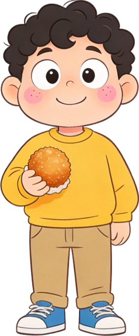
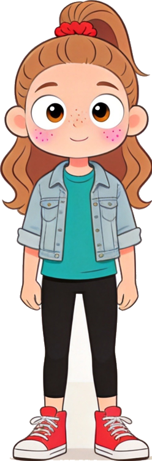
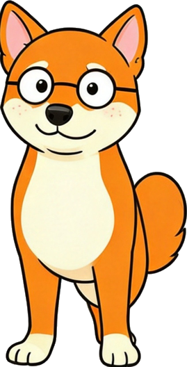

1
Le parti del discorso
Ogni parola ha il suo lavoro
Oh, la buona merenda
di Salvatore è sparita!
di Salvatore è sparita!




Chi ha mangiato la mia merenda?!
Facciamo i detective: guardiamo ogni parola!
Io no! Forse… un pochino.
Ricreazione in 2E. Salvatore apre lo zaino: la merenda è sparita e sulla lavagna qualcuno ha scritto una frase in fretta. Luce ha le briciole sul muso…
Per scoprire la verità bisogna fare come i detective: guardare ogni parola e chiedersi che lavoro fa nella frase. Le parole della lingua italiana si dividono in nove gruppi: le parti del discorso.
In questo capitolo impari a riconoscere le nove parti del discorso · distinguere parti variabili e invariabili · capire che la stessa parola può fare lavori diversi · fare l'analisi grammaticale passo dopo passo.
Ripasso grammaticale8